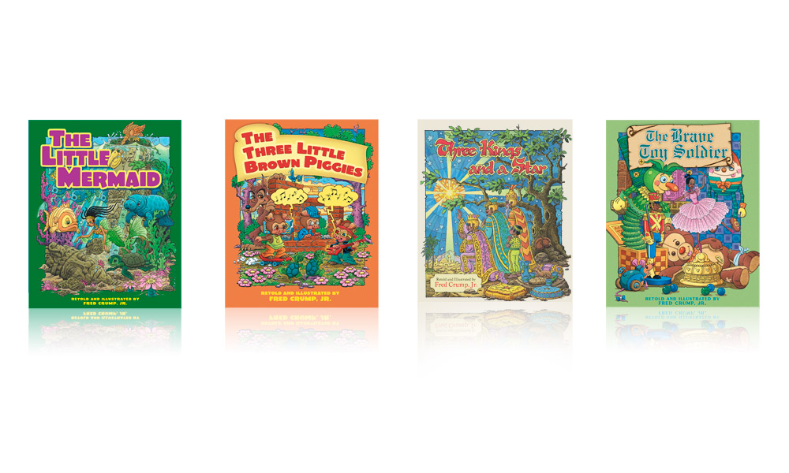
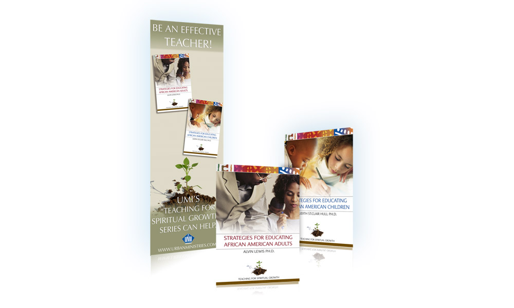
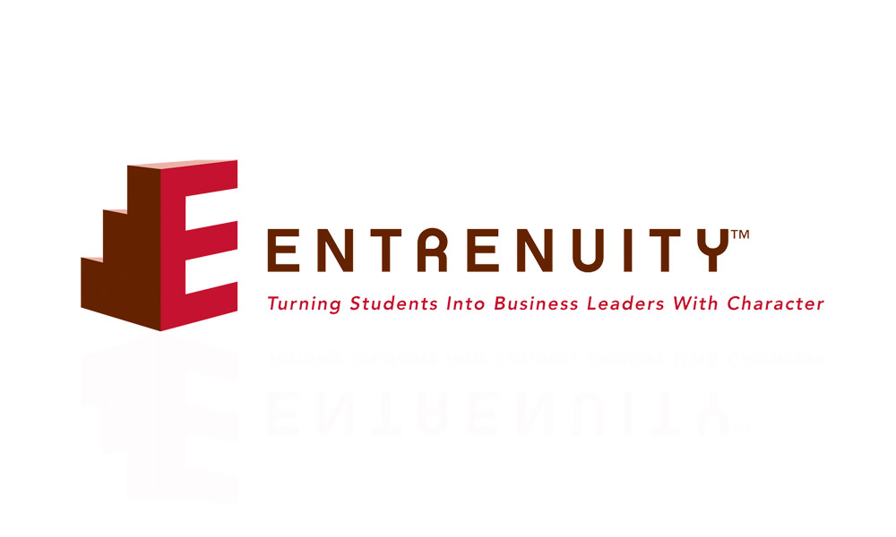

Fred Crump children’s books
Marketing
The marketing plan developed for these unique, African American children's books had to engage three primary audiences: consumers, bookstores and churches. It did so successfully by using traditional tactics such as a PR campaign (garnering more than a dozen book reviews), print promotions, online reviews and field & call center sales reps. In addition, a children's coloring contest was a creative and fun grassroots way to gain awareness.

Teaching for Spiritual Growth series
Marketing
After first managing the development of this series, Vicki also initiated its launch and led the marketing effort. Dialogue with the authors and feedback from teachers made it clear that a direct-to-institutions & educators approach was necessary. Therefore, we developed a workshop series that used content from the books as a foundation to train leaders on how to effectively organize multi-generational education specifically in the Black Church.

Entrenuity
Branding
Serving under-resourced communities through entrepreneurship education since 1999, Entrenuity's identity required updating. Vicki composed the organization's tag line and contributed to the update of its mission statement, logo and overall identity.


{kind=link}
{kind=link}
{kind=link}
{kind=link}
{kind=link}
{kind=link}
{kind=link}